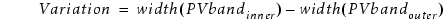
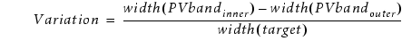
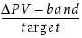

MaxCDVariabilityCheck
-layer input_layer_name
-subwindow expr_number
-minDRCwidth min_target_width
-maxDRCwidth max_target_width
-mode {absolute | ratio}
-maxCDvariability max_var
[-security {no | yes}]
[-markerLayer layer_name]
[-referenceLayer “%drawn” | “%retarget” | layer_name]
[-anchorLayer “%reference” | “%drawn” | “%retarget” | layer_name]
[-maxContourCondition contour_condition]
[-minContourCondition contour_condition]
[-minLineEnd line_end_dist]
[-checkName cName]
[-property {None | All | Max | MaxRatio | TargetCD}]
[-priority cPriority]
[-minMarkerWidth width_size]
[-comment comment_text]
[-classify handle]
[-appendMarker extra_markers_layer]
{-database db_name | -layerOut return_layer_name
| -database db_name -layerOut return_layer_name}
MaxCDVariabilityCheck
-layer input_layer_name
-pdkCheckName check_template
-database db_name
[additional_options]
For sensitive areas, as defined by a minimum and maximum width on the target layer, MaxCDVariabilityCheck checks how much the critical dimension (CD) changes over the process window. Violations represent areas on the PV-band where the variability is greater than -maxCDvariability or the PDK-specified amount.
This check is used to identify portions of the design that are most sensitive to process variations.
If used with a PDK, this function calls a MaxCDVariabilityCheck defined in the PDK and runs it for the specified layer, writing check results to the specified database.
LFD::MaxCDVariabilityCheck generates two types of error markers:
Typical error markers that show a CD variability violation.
Exceptions-only error markers which indicate that the check was not able to find the layer’s exterior PV-band within the maximum search distance from the target edge.
Properties attached to the exceptions-only error marker have a value of zero (0). Figure 2 shows an example of an exceptions-only violation. The distance from the drawn poly edge to the nearest poly maximum PV-band contour edge is more than the maximum search distance used in this case (which is 0.07). The default maximum search value for MaxCDVariabilityCheck is maxDRCwidth * 2.
Required keyword and argument defining the name of the layer you are checking. This is the layer for which PV-bands are generated.
Required keyword and argument defining the process variation experiment to which this check applies. You must reference individual process variation experiments by their positions in the -opticalSpanList and -doseSpanList arguments to the PVband command used to generate the PV-band data being checked. Thus, expr_number refers to an index to a list of experiments.
Setting expr_number to a value of “expr_number_shift” causes the check to operate on a certain shift for a double-patterned PV-band with overlay (for example, -subwindow 1_N causes the check to only run on the north shift).
Required keyword and argument used to constrain the checking to features having a width that is within a specified range. The function ignores areas where the width of the target features is less than min_target_width.
Required keyword and argument used to constrain the checking to features having a width that is within a specified range. Generally those areas where target layer geometries are wide enough to be at risk. The function ignores areas where the width of the target feature is greater than max_target_width.
Required keyword specifying the mode to use to evaluate CD variability.
absolute — express CD variability in microns:

ratio — express CD variability as a ratio:

Required keyword and argument defining the maximum variability allowed.
When the mode is absolute, this is expressed as a real number representing the maximum change in width allowed, in microns. This check flags an error when the variation is greater than this value.
When the mode is ratio, and variability is expressed as the ratio,  this is the maximum ratio allowed. This check flags an error when the variation is greater than this value.
Optional argument defining security privileges. If set to “yes”, the setup file is encrypted in the transcript.
Optional keyword and argument used to constrain the check to those contours that lie within polygons on layer_name. The function ignores areas outside polygons on the layer.
A -layerOut layer or a derivation of a -layerOut layer should not be used as the input to ‑markerLayer, or a circular layer definition results.
Use of this keyword to limit the check to potential problem areas is highly recommended.
Optional keyword and argument to have the check measurements calculated on a different layer than the input layer to the checks for which the PV-bands have been generated.
You can provide one of the following options as an input to this argument:
“%drawn” — Default. The check measurements are calculated with respect to the drawn layer input to the check with -layer.
“%retarget” — The check measurements are calculated with respect to the retarget layer of the input drawn layer of the check. The check stores the retarget layer name in the PDK.
layer_name — You can define any layer name to have the check measurements done with respect to it. This argument can be used when no PDK is used, and you know the name of the retarget layer.
Optional keyword and argument to have the output error markers from the checks anchored on a different layer than the input drawn layer of the checks, and different from the reference layer input to the check.
You can provide one of the following options as an input to this argument:
“%reference” — Default. The output error markers are anchored to the layer input to -referenceLayer.
“%drawn” — The output error markers of the check are anchored to the drawn layer input to the check with -layer.
“%retarget” — The output error markers of the check are anchored to the retarget layer of the input drawn layer of the check. The check stores the retarget layer name in the PDK.
layer_name — You can define any layer name to have the output error markers anchored to it. This argument can be used when no PDK is used, and you know the name of the retarget layer.
Optional keyword and argument used to define certain contours to be used as the maximum contour for -layer1. The contour_condition can be defined as follows:
min — Specifies the command works on the inner PV-band contour.
max — Specifies the command works on the outer PV-band contour.
integer — This integer defines the order of the contour to be checked in the subwindow.
process condition list — This must be an ordered list, with 3, 4, 5, 6, 8, or 10 elements defining an explicit process condition. The list must be supplied as follows:
{optical1 dose1 size1 [resist1 etch1] [optical2 dose2 size2 [resist2 etch2]]}
These values must define a process condition (dose and focus settings) that is one of the conditions evaluated by the LFD::PVband or LFD::RegisterContour commands for the layer.
Optional keyword and argument used to define certain contours to be used as the minimum contour for -layer1. The contour_condition can be defined as follows:
min — Specifies the command works on the inner PV-band contour.
max — Specifies the command works on the outer PV-band contour.
integer — This integer defines the order of the contour to be checked in the subwindow.
process condition list — This must be an ordered list, with 3, 4, 5, 6, 8, or 10 elements defining an explicit process condition. The list must be supplied as follows:
{optical1 dose1 size1 [resist1 etch1] [optical2 dose2 size2 [resist2 etch2]]}
These values must define a process condition (dose and focus settings) that is one of the conditions evaluated by the LFD::PVband or LFD::RegisterContour commands for the layer.
This switch is useful when variations between layers are well-controlled, and you are interested in considering process variations of one layer over the nominal behavior of another.
Optional keyword and argument providing the definition of a line end error distance. Any error this close to a line end, or closer, is considered a line-end error, and its error marker is removed from the final error group. The default value for line_end_dist is ‑minDRCwidth.
Optional keyword and argument specifying the name to use for the check in the RDB. If not specified, the check in the RDB is assigned a system-generated name as defined in Table 1. Use this keyword to avoid name collisions when performing multiple checks of this type.
-property {None | All | Max | MaxRatio | TargetCD}
Optional keyword and argument specifying whether or not the check should save error measurement data to the RDB database. The check reports the specified property measurements for the feature as a property. The argument to this keyword must be one of the following:
None — Default. Error measurement data is not reported.
All — Reports Max, MaxRatio, and TargetCD.
Max — The maximum change in width measured for the feature.
MaxRatio — The ratio of the PV-band variability to the TargetCD.
TargetCD — The CD of the drawn feature.
Optional keyword and argument specifying a priority for this check. If not specified, the check in the RDB is assigned a system-generated priority based on the -subwindow value and default ranking of 3, as defined in Table 2. cPriority must be an integer value.
Optional keyword and argument defining the minimum width for error markers sent to the Check Database. Any error for which the error marker is smaller than this width is ignored. width_size must be specified in user units (um). By default, width_size is 0. This option allows you to remove thin width error markers from Calibre LFD check results, as thin, long errors can negatively affect Calibre LFD runtime.
Optional keyword and argument used with -database for defining the comment text to be reported in the RDB if the check encounters a violation of this type. There is no default value for this argument.
The comment_text must be a single string, so comments containing spaces must be enclosed in braces. For example:
-comment {This is my comment.} Optional keyword and argument used to define a handle to point to an LFD::ClassifyConfig object.
Optional keyword and argument to add the polygons in the extra_markers_layer layer to the output of the check. The output retains the properties on the extra_markers_layer layer supported by the check. This option is not allowed for checks that are tied to an LFD::StructureOptimizer.
Required keyword and argument defining the RDB to which spacing values for violations identified by the check are written. You must indicate where the violations are written by specifying -database or -layerOut or both.
Required keyword and argument defining the name of a derived layer to which the violations identified by the check are written. This layer exists in memory and can be referenced in subsequent Calibre nmDRC operations. You must indicate where the violations are written by specifying -database or -layerOut or both.
A -layerOut layer or a derivation of a ‑layerOut layer should not be used as the input to ‑markerLayer, or a circular layer definition results.
Required keyword and argument specifying the name of the check template defining how the check is performed.
Optional keywords and arguments allowed only when the security settings within the PDK permit you to modify the settings for this command. These can be any of the options for the non-PDK MaxCDVariabilityCheck command. Any additional options specified overrides the options defined within the PDK.
LFD::MaxCDVariabilityCheck \
-layer metal1 \
-subwindow 1 \
-mode absolute \
-minDRCwidth 0.15 \
-maxDRCwidth 0.05 \
-maxCDvariability absolute \
-database minWidthCheck.rdb